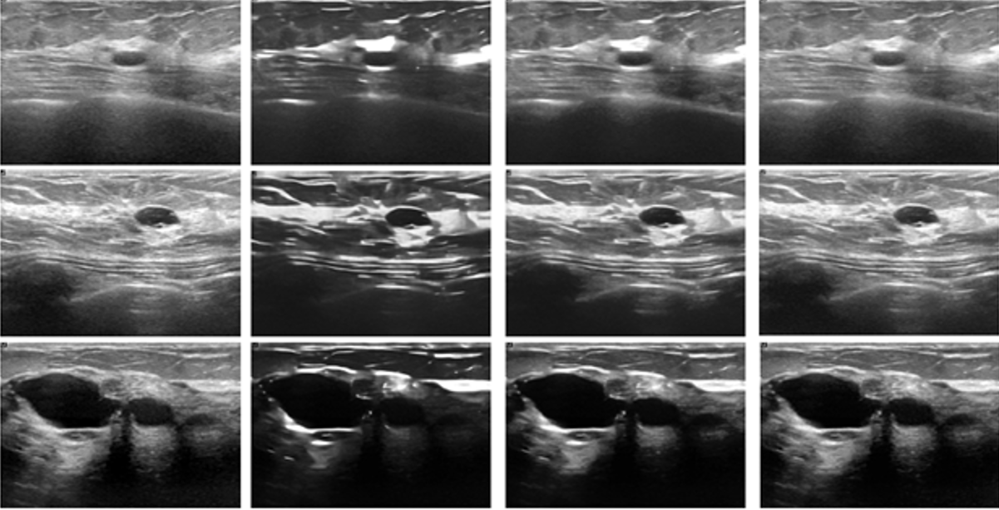
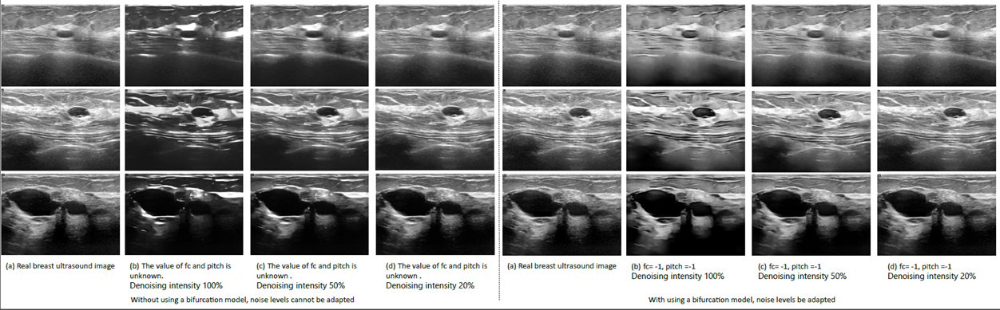

A Transducer-adaptive Denoising Model for Medical Ultrasound Imaging

Published Jan 06 Monday 2024
Ultrasound imaging has been adopted in clinical diagnosis in large numbers for its advantages of safety, non-invasiveness, convenience and simple operation, and is one of the important tools for clinical diagnosis. However, the actual ultrasound images generally have problems such as more speckle noise, low signal-to-noise ratio, low contrast, etc., and therefore need to denoise the ultrasound images.
In the process of ultrasound image acquisition, due to the reflection, scattering and refraction characteristics of ultrasound echoes; and the inhomogeneity of various parts of the human body tissues and the uncertainty of the spatial distribution, when ultrasound is shot into the human body, a large number of randomly distributed scattering particles will be formed, and the interactions between the scattering particles will generate the relevant scattering beams. In the echo reflection process, due to the interference effect of the reflected echo and the existence of mutual interference between the scattered beams, so that when the echo of different beams overlap, due to the different phase of the echo, the amplitude of the amplitude of the phase plus enhancement and phase minus weakening, which in the transducer after the output of the envelope detection caused by the electrical signal of the random ups and downs, and in the ultrasound image to generate the dark and light speckle particles, the noise is often referred to as the Multiplicative speckle noise. In addition, during the operation of ultrasound equipment, the internal devices of the transducer, circuitry, electromagnetic interference, etc. will produce a certain amount of additive Gaussian noise, these noises together form the complex noise of medical ultrasound images. At present, there have been researchers to study the denoising of medical ultrasound images, but these methods can not be different medical ultrasound instrument settings for different parameters of the noise generated by the adaptive denoising.
In order to overcome the above difficulties encountered in ultrasound image denoising, we propose a controllable noise removal method for medical ultrasound images.
The method is able to adapt to a wider range of denoising, adaptive denoising, flexible adjustment of denoising intensity, and effective removal of noise from medical ultrasound images while retaining the detailed information of medical ultrasound images.
The controlled noise removal method for medical ultrasound images proposed in this study provides a new idea for other types of medical image denoising, and this method can also be used for other medical image denoising of the same modality..
Project leaders
MingfuJiang
Partner Organisations
南京航天航空大学
Project Example

© Generalized Electric Medicine 2023 of Macao polytechnic university.
The Generalized Electric Medicine is part of the Macao polytechnic university.